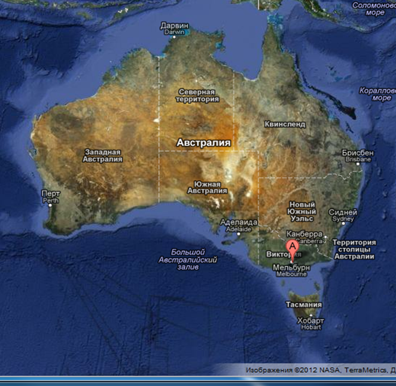
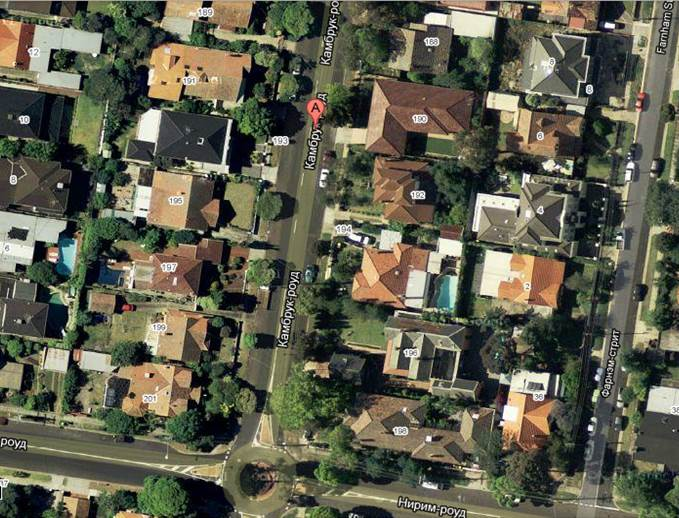
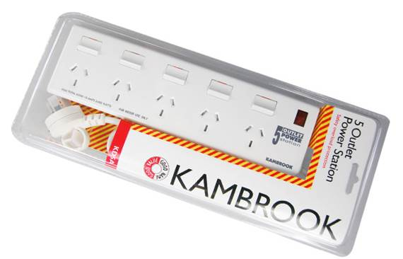
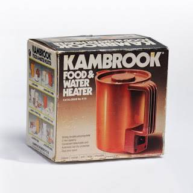
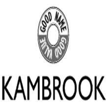

Почти 50 лет, Kambrook является синонимом доступной, качественной техники, которая включает гораздо больше возможностей, чем можно было бы ожидать от этой цены.
Сегодня, Kambrook постоянно расширяет ассортимент продукции, который охватывает технику для кухни: от медленноварок до чайников и фритюрниц, а также технику для гостиных, ванных комнат, как, например, утюги, пылесосы, обогреватели, электрические одеяла и фены.
Kambrook Road
Компания была основана в 1964 году австралийским изобретателем Фрэнком Бэнигэном (Frank Bannigan), который был одержим идеей создания качественных электроприборов по приемлемой цене. Фрэнк переоборудовал свой гараж в мастерскую и назвал компанию в честь улицы, на которой он жил.
Kambrook изобретает удлинитель
Эта философия быстро привела к изобретению в начале 1970-х годов первого главного продукта Kambrook – удлинителя с четырьмя розетками. На самом деле Фрэнк разработал его из-за необходимости, так как он не имел достаточно точек питания для тестирования своей продукции. Это было простое, недорогое и эффективное решение. Продукт стал мировым хитом и остается необходимыми бытовым прибором и по сей день.
Другие успехи Kambrook
За удлинителем быстро последовали следующие изобретения – включаемый в розетку таймер. Он также был изобретен для тестирования техники на включение/выключение без участия человека, однако быстро стал популярен.
В 1977 году, в изобретательный ум Фрэнка пришла революционно новая идея - пластиковый чайник. С лучшей теплоизоляцией, чем металл, новый чайник был дешевле, и безопаснее. Это доказала еще одна крупная австралийская история успеха Kambrook - продажа более чем 250,000 единиц в первый год.
Kambrook ищет таланты
В то время как название Kambrook становилось популярным, благодаря изобретательности Фрэнка и его команды, компания стала спонсором одного из популярных Австралийских шоу – Young Talent Time.
Это еще сильнее укрепило Kambrook как сильный австралийский брэнд.
Слоган Kambrook в то время звучал следующим образом: It took Kambrook to think of it (Возьмите Kambrook, что бы он думал об этом).
До Антарктиды и обратно
Следующим этапом развития Kambrook стал момент, когда компания решила протестировать свой первый обогреватель в экстремальных условиях. Опытные экземпляры были отправлены на станцию Моусон в Восточной Антарктиде, где температура зимой падает до минус 70 градусов по Цельсию. Там их протестировала команда ученых из 20 человек и подтвердила высокое качество обогревателей.
Позже такая практика стала обязательной при тестировании новых продуктов Kambrook. Только теперь тестирование проводится в специализированных лабораториях в Австралии.
Разумный выбор от Kambrook
Основной принцип компании – жесткий контроль качества своей продукции. На каждом приборе Kambrook указано, каким образом он был протестирован. Компания делает это, чтобы покупатели были уверены в качестве техники Kambrook.
Как результат, покупатели Kambrook получают надежный продукт с лучшими качествами по честной цене.